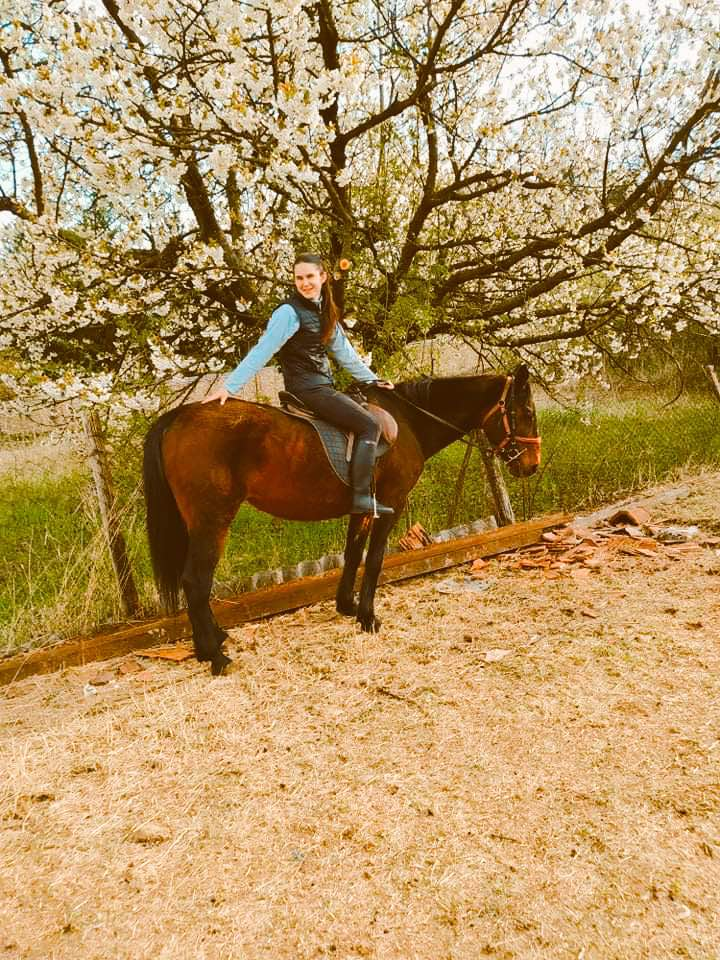
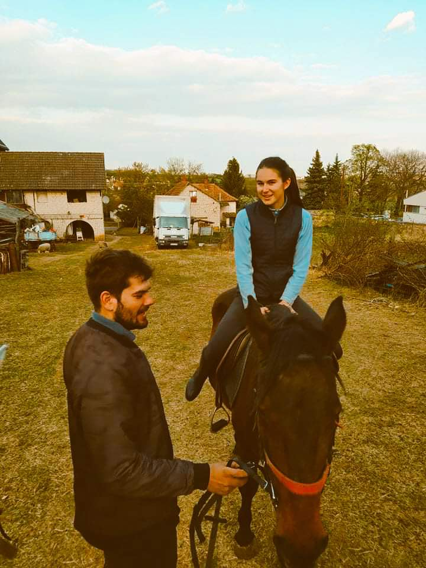
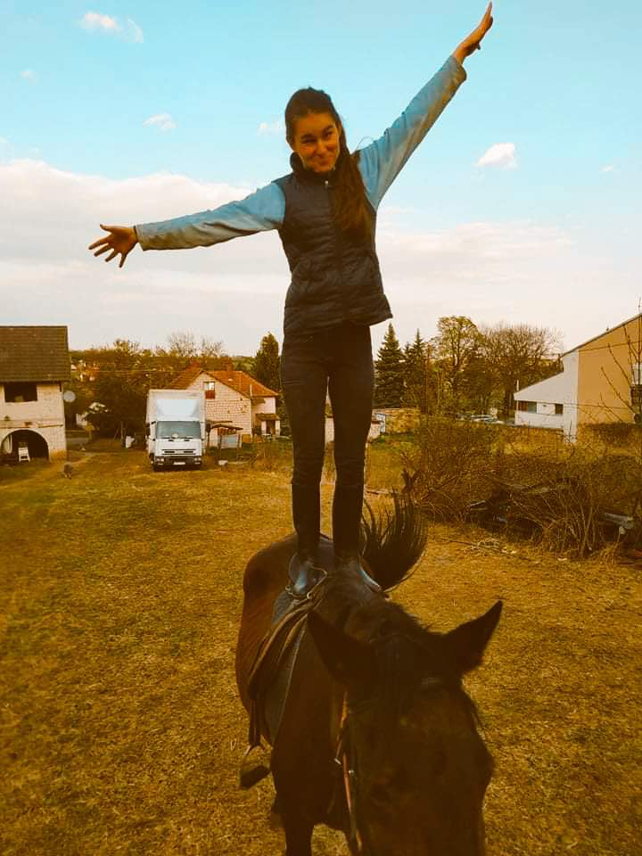
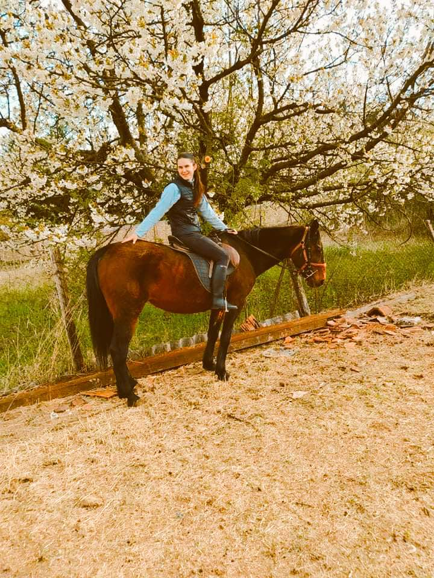
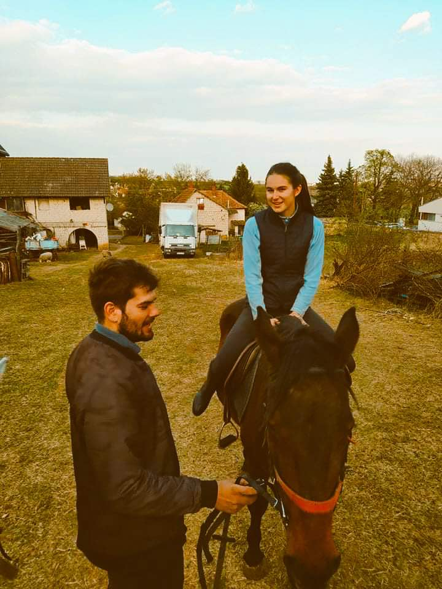
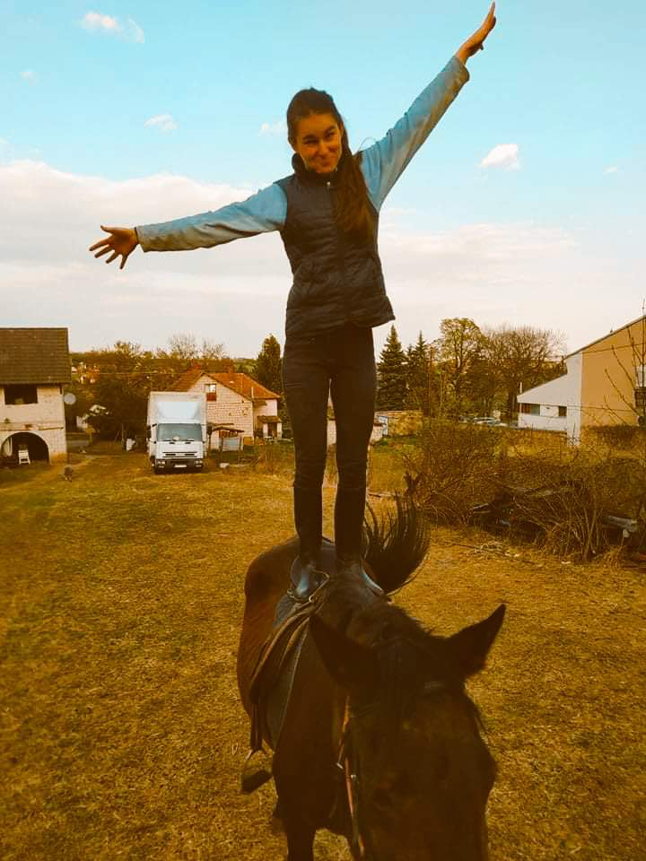
Kaló Eszter Krisztina vagyok, 19 éves és a 4 gyerekes család 3. gyermeke vagyok. Noszvajon élek a családommal és rengeteg állatunkkal. Nagyon szeretem a nagy családom és azt hiszem meghatározó is ezt az életemben. Noszvajon élek amitóta eszemet tudom, ez az otthonom. Nagyon nehéz feladatnak érzem, hogy egy bemutassam ki vagyok, hiszen éppen egy identitás keresési időszakomban vagyok. Nem hiszek abban, hogy csak jellemzők sokasaga vagyok, ennél mindenki sokkal több. Viszont az nagyon jellemez, hogy szeretek mosolyogni és sokat beszélni. Idén kezdtem az egyetemet Budapesten a Budapesti Műszaki és Gazdaságtudományi Egyetemen. Választott szakom az Ipari termék- és formatervező mérnöki lett. Azt hiszem az indok amiért ezt a szakot választottam, az a kreatív energiáim és a hatalamas tudásvágyam keveredése volt. Nagyon szeretek rajzolni és csak úgy valamit alkotni a kezemmel. Az életemnen továbba fotnos szerepet tölt be a hit. Szoktam szolgálni a noszvaji Református gyüleketebe és második otthonomnak is tekintem ezt a közösséget.
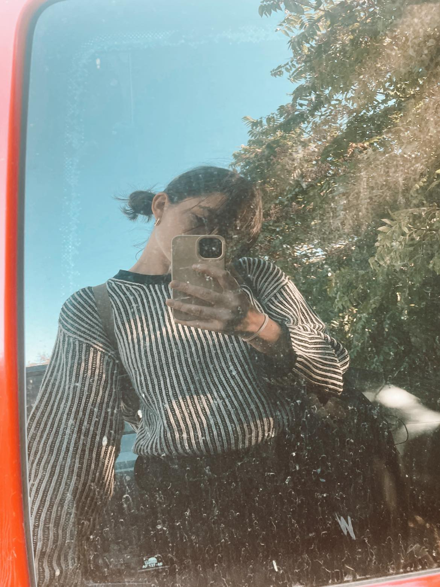Nagy családdal áldott meg a Jó Isten, 3 testvérem van. Én vagyok a sorban a 3. Nagyon szeretem azt, amit ez a nagy családos élet biztosit, a sok zsibongást és azt, hogy mindig számíthatok valakire. A kettő nagyobb testverem már felnőtt, önálló elettem. A nővérem orvos a bátyám pedig mérnök. A húgom gimis. A jövőben én is sok gyereket szeretnék, mert azt érzem ez a jellem fejlődésemben is elképesztő fontos szerepet játszott, hogy megtanultam mar egész pici koromban sok emberrel együtt rezegni. Újdonság számomra, de lassan 1 éves a keresztfiam, Lázár, akik mérhetetlenül szeretek. A családom négylábú tagjairól sem feledkezhetek meg, van 2 cicánk, 1 kutyánk, 3 lovunk és 4 birkonk.
Nagyon aktív embernek tartom magam, nem tudok megülni a fenekemen éppen ezért nagyon sok mindent kipróbáltam hobbit már. Újítottam fel paraszt bútorokat és leheltem beléjük új életet. Szeretek továbbá varrni is, de már a horgolással és kötéssel is próbálkoztam.
Ám az évek során a legjobban a kertészkedés kapcsolt ki. Valahogy amikor egy apró magból egy élet növekedik abban annyira látom az Isten szeretetét. Van egy konyhakertem, amit én alakítottam ki. Nagyon szeretem szépítgetni, gondozgatni és nyilván utána a megtermett zöldségeket fogyasztani. Valahogy olyan megnyugtató és egyben kedves időtöltés ez nekem. Amikor kint vagyok a kis kertemben akkor érzem a legnyugodtabbnak magam.
Van egy hobbi, amit a húgommal, Ritával közösen űzünk, ezt a lovaglás. Szeretem a lovakat és magát a sportot, mert nagyon megmozgatja minden izmomat és szabadsággal tölt el, ha vágtázhatok.
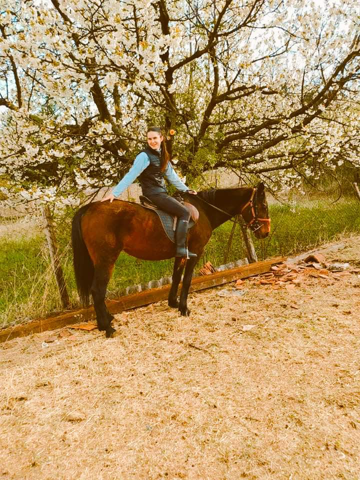
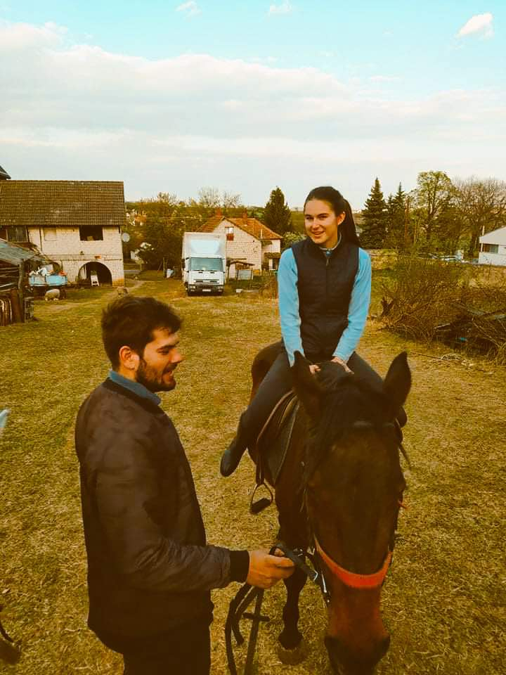
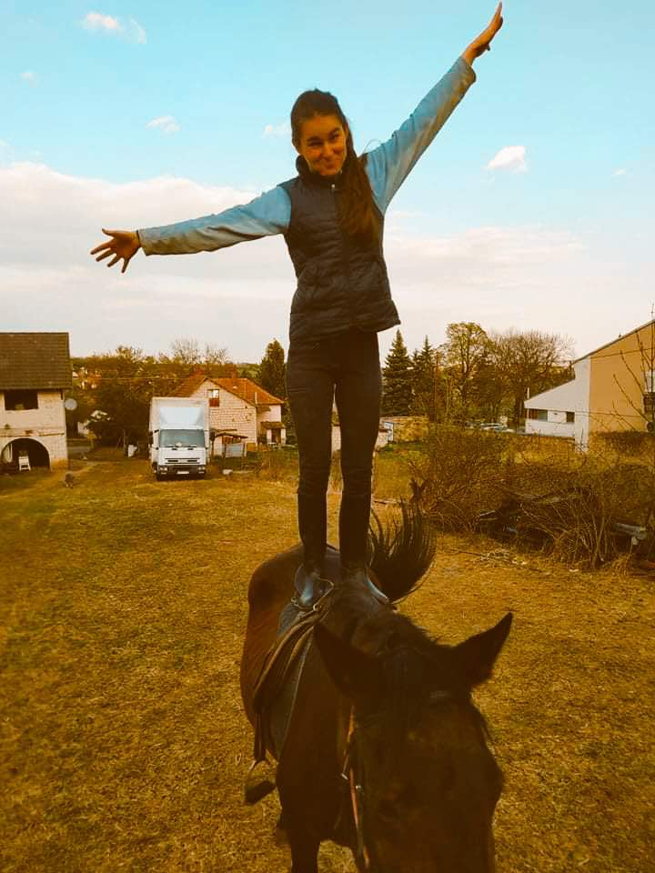
Egyik leghasznosabb hobbim az a sütés-főzés. szeretek új ételeket kiprobálni és elkészíteni.
Egészen pici korom óta nagyon érdeklődöm a fazekas szakma után. Csodásnak látom azt, hogy az emberi kéz milyen elképesztő formákat tud egy darab agyagból alkotni. Az álmom, hogy egyszer fazekas lehessek, legyen egy kis műhelyem és mehessek piacokra árulni az alkotásaim.
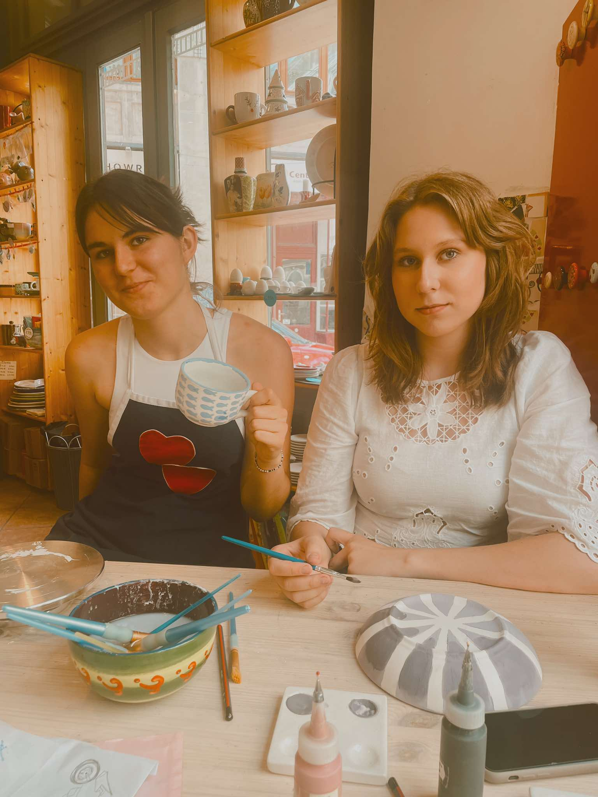 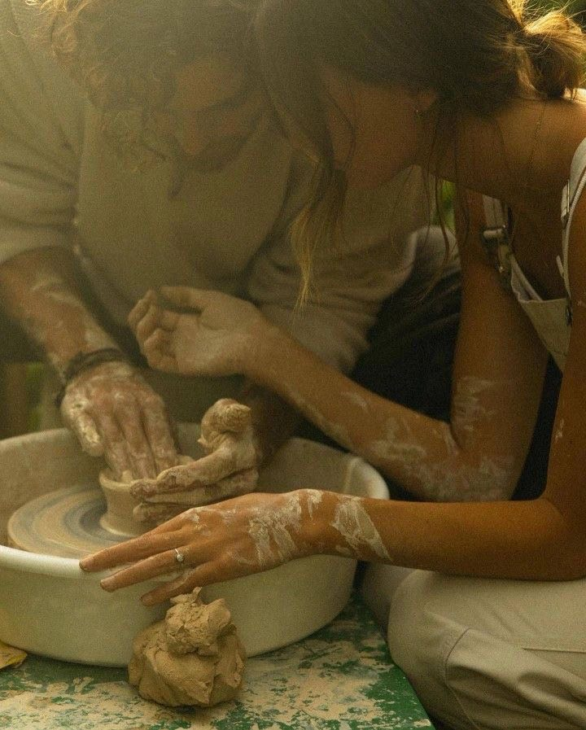Református vagyok és az Isten szeretete nagy szerepet játszik az életemben. járok gyülekezetben, olykor szolgálok.
A noszvaji gyülekezethez tartozom és itt járok ifibe. Nagyon sok barátot és szeretet adott nekem ez az közösség, de valahogy az egész világban azt érzem,
hogy a hit akkora kapocs az emberek között, hogy az hatalmas erő.
A megteresemről itt olvashatja bizonyságomat: Kaló Eszter - bizonyság
Kedvenc igéimet itt láthatod:
'És ezt mondá nékem: Elég néked az én kegyelmem; mert az én erőm erőtlenség által végeztetik el. Nagy örömest dicsekeszem azért az én erőtelenségeimmel, hogy a Krisztus ereje lakozzék én bennem. '
2 Korinthus 12:9
Ha szeretnék naprakészen nyomonkövetni az életem, akkor kövess be instagrammon!

Ha szeretnék naprakészen nyomonkövetni az életem, akkor jelölj be facebookon!

Ha szeretnék naprakészen nyomonkövetni az életem, akkor kövess be pinteresten!

Név:
Email: